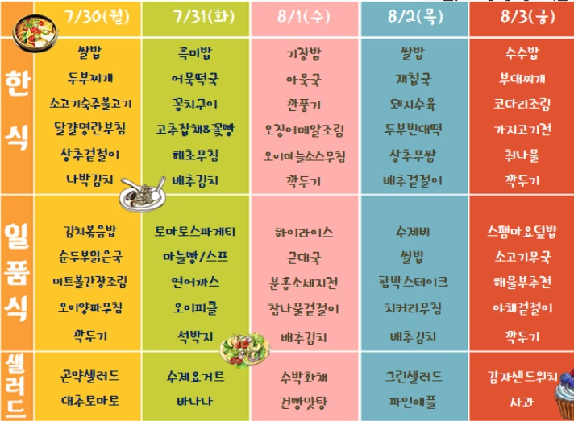

- Floor Map
- Lunch Menu
Floor Map
부산은행
:::문현본점:::
23층:SkyHall,하늘정원
22층:직원식당,건강관리실,BNK카페
21층:BNK금융지주,그룹총괄부문장,그룹WM본부장
20층:BNK금융지주회장실,사장실,그룹전략재무총괄부문장,임원부속실
19층:BNK금융지주,준법감시인
18층:은행장실,경영혁신실,경영관리그룹장,마케팅그룹장,여신운영그룹장
17층:상임감사위원,검사부,홍보부,BNK희망나눔재단,도서열람실,브리핑룸
16층:경영기획본부장,리스크관리본부장,전략기획부,재무기획부,리스크관리부,여신감리부
15층:여신영업,IB사업본부장,영업본부장,여신기획부,리테링금융부,외환사업부
14층:여신심사부,투자금융부
13층:WM사업본부장,마케팅전략부,수신기획부,WM사업부
12층:업무지원본부장,인사부,총무부
11층:신탁사업단,신용평가부,노동조합
10층:디지털금융본부장,디지털금융부,스마트영업부,프로세스혁신부
9층:IT본부장,CISO,IT기획부,정보보호부
8층:IT개발부
7층:카드사업부,디지털금융개발부
6층:준법감시인,준법감시부,금융소비자보호부,검사장
5층:여신관리부,BNK금융지주디지털사업지원부,디지털혁신센터,BNK금융경영연구소
4층:BNK영상방송센터,피트니스센터
3층:업무연수실,다목적회의실
2층:안전관리실,민원실,대강당,BNK라운지,IT센터신축사업단
1층:부산은행금융역사관,기업홍보관,BNKART갤러리,영업부
B1:종합방재센터,용도품창고,문서수발실,주차장
Lunch Menu
